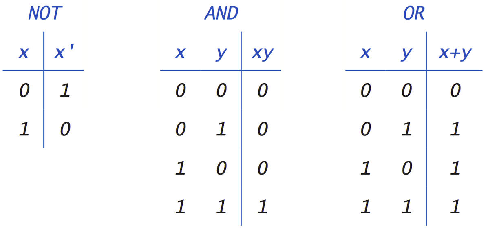

title: Warsztaty z podstaw Pythona - Snake 15.10.2019 class: animation-fade layout: true --- class: impact # {{title}} --- # Mateusz Bełczowski [https://github.com/MateuszBelczowski](https://github.com/MateuszBelczowski) [https://twitter.com/mateusz__be](@mateusz__be) --- # Program warsztatów - Sprawdzenie konfiguracji - Czym jest Python? - Dyskusja nad mechanizmami gry Snake - Pierwszy program w Pythonie - Zmienne & Typy danych - Instrukcje warunkowe - Pętle - Podstawowe kolekcje - Funkcje - Wykorzystanie poznanych konstrukcji do realizacji gry Snake --- # Sprawdzenie konfiguracji - zainstalowany Python 3.7 - zainstalowany Pycharm - podpięcie Pythona 3.7 jako interpreter w Pycharmie --- # Python - język programowania - rozpoznać można po rozszerzeniu pliku ".py" - bogaty ekosystem - dużo istniejących rozwiązań, które możemy wykorzystać u siebie - wszechstronność --- # Mechanizmy gry Snake --- - narysowanie planszy - narysowanie segmentów, z których kłada się wąż - reagowanie na przyciski wciśnięte przez użytkownika - przesuwanie węża w odpowiednia stronę - przechodzenie przez ściany - narysowanie jedzenia - obliczanie wyniku - warunek zjedzenie - warunek końca gry --- # Pierwszy program w Pythonie ``` python >>> ``` ``` print("Hello World!") ``` Komentarze ``` # To jest komentarz ``` --- # Zmienne - Przypisywanie do zmiennych ``` ocena = 6 ulubiona_ksiazka = "Władca Pierścieni" ``` - Wielokrotne przypisania ``` ulubiony_film = ulubiona_ksiazka = "Władca Pierścieni" ``` ``` wiek, wzrost = 10, 140 ``` ``` imie, nazwisko, rok_urodzenia = "Jan", "Kowalski", 1999 ``` --- # Formatowanie tekstu ``` "Hello, {}".format(name) ``` Python 3.6+: ``` f"Hello, {name}" ``` ``` f'Wynik dodawania to {4 + 3}' ``` Więcej: https://realpython.com/python-string-formatting/ --- # Typy danych --- # Liczby całkowite ``` a = 3 ``` ``` b = 14 ``` ``` a < b ``` ``` b / a ``` --- # Liczby zmiennoprzecinkowe ``` a = 6.0 ``` ``` b = 14.0 ``` ``` c = 6.34 ``` ``` b / a ``` --- # Operacje arytmetyczne `+` `-` `*` `/` `%` `**` `//` `abs()` --- # Porównania `<` `>` `<=` `>=` `==` `!=` --- # Zmienne logiczne `True` `False` -- Truthy Falsy -- ``` a = 'slon' b = '' bool(a) bool(b) ``` ``` x and y x or y not x ``` ---  --- # Napisy " " ' ' --- # Napisy format() input() len() print() zakresy: ``` greeting = "Hello, World" salutation = greeting[:5] name = greeting[7:] comma = greeting[5:6] ``` --- # Operacje na napisach `x in y` count() find() index() join() split() replace() --- # Pobieranie i konwertowanie danych od użytkownika - `input()` - `input(prompt='jak jest?')` - `input('jak jest?')` - `input()` zwraca napis --- # Zadanie 0 Napisz program, który zapyta użytkownika o imię, a następnie wyświetli napis z pobranym imieniem oraz liczbą liter, z którego się ono składa, np. "Twoje imię to Mateusz i składa się z 7 znaków" --- # Instrukcje warunkowe - `if` -- - blok kodu -- - `pass` -- - operatory logiczne -- -> `if.py` -- -> `if1.py` -- -> `if2.py` -- -> `if3.py` -- -> `if4.py` --- # Instrukcje warunkowe -> `if5.py` -- -> `if6.py` -- -> `if6b.py` -- -> `if7.py` --- # Zadanie 1 Napisz program, który umożliwi wprowadzenie imienia użytkownika, a następnie oceni, czy jest ono długie czy nie. Uznajmy, że imiona dłuższe niż 8 znaków (czyli od 9 w górę) są długie, zaś pozostałe traktujemy jako krótkie. Program powinien wyświetlić użytkownikowi informację (napis) z decyzją. --- # Zadanie 2 Napisz program, który pobiera wiek oraz wzrost użytkownika i sprawdza, czy może on wejść na karuzelę. Jako limit zakładamy min. 10 lat oraz min. 140 cm wzrostu. --- # Zadanie 3 Napisz program, który pobiera od użytkownika wynik z testu w % i wyświetla odpowiadającą temu wynikowi ocenę --- # Instrukcje sterujące (for) - `for element in iterator` - wykonywana po kolei dla każdego elementu - funkcja `range` zwraca kolejne indeksy (domknięte lewostronnie) - `break` - `continue` --- # Instrukcje sterujące (for) -> `for1.py` -- -> `for2.py` -- -> `for3.py` -- -> `for4.py` -- -> `for5.py` -- -> `for6.py` -- -> `for7.py` --- # Instrukcje sterujące (while) - `while predykat` - wykonywana tak dlugo jak długo predykat w wyrażeniu jest prawdą - może być nieskończona -- -> `while1.py` -- -> `while2.py` -- -> `while3.py` --- # Zadanie 4 Napisz program który wypisze 100 razy "Będę automatyzować powtarzalne zadania" --- # Zadanie 5 Napisz program który wypisuje liczby mniejsze od 100 które sa parzyste i podzielne przez 3. --- # Zadanie 6 Napisz program, który wylosuje liczbę z zakresu 1-100, a następnie do zadania użytkownika będzie należało jej odgadnięcie: - program informuje, że podana liczba jest za duża lub za mała - program kończy się, gdy użytkownik zgadnie właściwą liczbę - program powinien w tym momencie pogratulować mu wygranej oraz poinformować o liczbie prób, które były potrzebne Podpowiedź jak wygenerować losową liczbę: `import random` `wylosowana_liczba = random.randint(1, 101) # wygeneruj liczbę z zakresu 1-100` --- # Podstawowe kolekcje --- # Listy - tworzenie list ``` lista = [1, 2, "slon", "cebula"] ``` -- -> `listy1.py` -- - arytmetyka na listach -- -> `listy2.py` -- - puste listy -- -> `listy3.py` -- - pobieranie elementu listy -- -> `listy4.py` --- # Listy -- - modyfikowanie listy -- -> `listy5.py` --- # Listy cd. - `.sort()` - `sorted()` - `.reverse()` - `reversed()` - `.pop()` -- -> `listy8.py` --- # Zadanie 7 Napisz program, który pobierze od użytkownika 5 dowolnych wyrazów, doda je do listy, a następnie wyświetli pierwszy i ostatni element. --- # Słownik - `slownik = {'jeden': 1, 'dwa': 2}` - klucze są niepowtarzalne -- -> `dict1.py` -- - klucze można dodawać -- -> `dict2.py` -- - klucze można usuwać -- -> `dict3.py` --- # Zadanie 8 Napisz program, w którym stworzysz słownik, który opisuje jakąś osobę: - przykładowe pola: imię, nazwisko, adres, rok urodzenia - wypełnij nimi zdanie, które opiszę tę osobę, np. "Jan Kowalski urodził się w 2000 roku i mieszka pod adresem Warszawska 1" - pobierz od użytkownika pseudonim dla tej osoby i zapisz w słowniku pod kluczem "pseudonim" --- # Krótkie wprowadzenie do biblioteki Turtle `import turtle` `turtle.Screen()` `t = turtle.Turtle()` `t.goto(100, 50)` --- # Pisanie własnych funkcji ``` def funkcja(): pass ``` -> `funkcje1.py` --- # Przekazywanie parametrów do funkcji ``` def funkcja(argument, drugi_argument): pass ``` -> `funkcje2.py` --- # Zmienne lokalne a zmienne globalne -> `zmienne_lokalne_i_globalne.py` --- # Kolejne etapy realizacji gry 1. Startujemy z kodem, który wyświetla nieruchomego węża na planszy 2. Poruszanie się węża w zadanym kierunku 3. Generowanie jedzenia na planszy 4. Umożliwienie zjadania jedzenia przez węża 5. Wykrycie zderzenia się węża z samym sobą i zakończenie gry 6. Obsługa przechodzenia przez ściany 7. Wyświetlanie wyniku ---